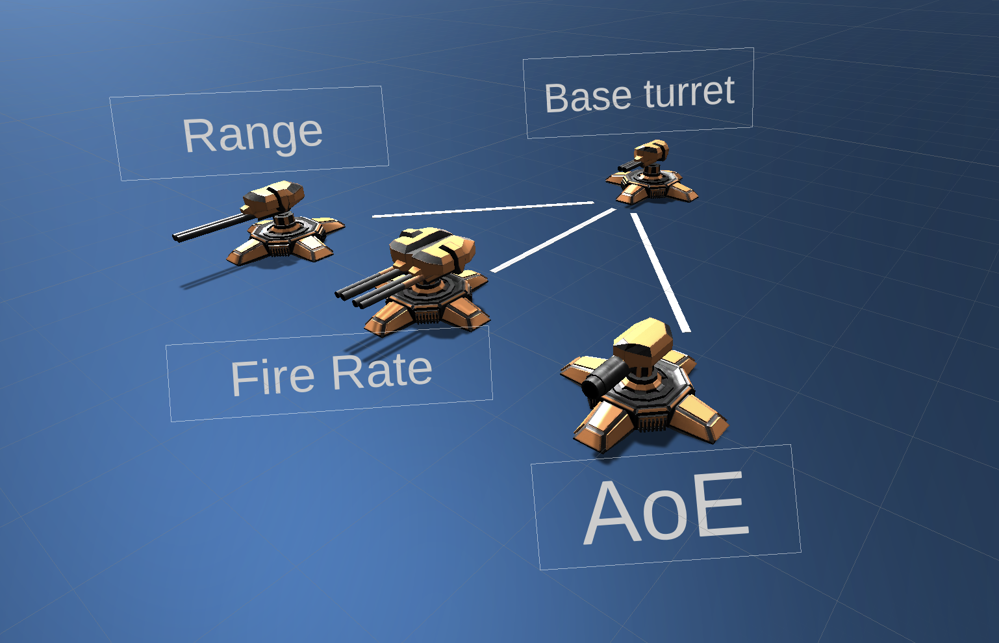
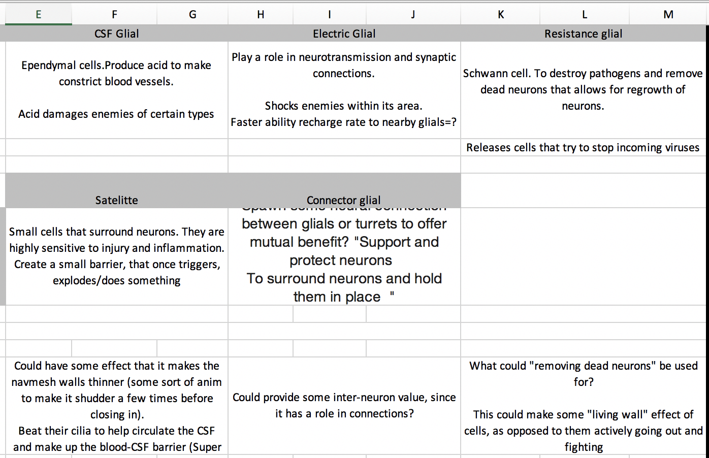
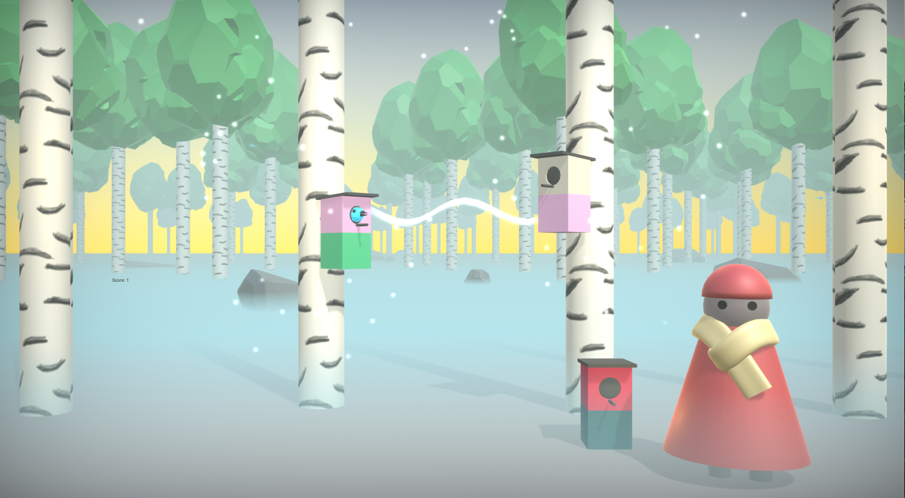

NeuroDefense: Quiz game meets 3D tower defense
Teaches the role of psychology and neuroscience in video games
Game Description
You need to take matters into your own hands (brain?), go inside of your brain, take control of its natural defenses, and strengthen it to fight back in order to save your brain and eliminate the attackers!
The game itself consists of brief lessons regarding each of the brain regions, its role and how this is influential in games. After the lesson, there is a quiz that offers players a chance to be rewarded for understanding the material. If a question is incorrect, the correct answer is displayed along with an explanation as to why. For each correct question answered, the player receives a reward of 1) the energy-currency Glucose to be spent on turrets and upgrades and 2) cards which are used to upgrade turrets, exchange for glucose, or upgrade glial cells.
The player reviews how many questions were answered correctly, etc, then moves to the combat phase where they must defend the neural connections in their own brain to save themselves.
----- ----- ----- ----- ----- ----- ----- ----- ----- ----- ----- ----- ----- ----- ----- ----- ----- ----- ----- ----- ----- ----- ----- -----
The game was made entirely myself over a period of several months before/after work, lunchbreaks, and on weekends. It has been a huge amount of work but a labor of love.
Since I am partially self-taught, the process basically consisted of me writing out my vision with a few designs in mind, drawing several prototypes, and iteratively improving until reaching a point to begin the actual coding.
I have had several game ideas in the past, but this was the first time I ever actually implemented something. I wanted to make an educational game years ago, had done all the research, but did not have the coding ability to carry it out.
There is a short gameplay video available on my Youtube channel to get an idea of the flow of the game.
01 THE PROCESS
Design process, trouble-spots, future plans
GAME IDEATION
My vision was always a struggle from brain lobe to brain lobe, while learning about the functions of that lobe while fighting there and receiving benefits for strengthening the neural connections by correcting answering questions
and improving brain function – resulting in a more efficient defense system.
*An idea that did not make it into the game (perhaps another) involves connecting and disconnecting the synapses to form a path for the enemies – perhaps depending
on neuro-health marker (quiz score?). However, for this game I wanted the player to have the choice about which parts they play.
GAME DESIGN
I chose tower defense because it provided a good framework upon which I could place quiz rounds and a logical way to progress the difficulty. Further, the continual accumulation of resources in TD
games allowed me to easily provide rewards for correctly answering questions.
All 6 brain areas must be cleared, with 4 stages per area. Each stage gets progressively more difficult, occuring deeper in the brain, bringing visual changes and more complex neural pathways that the invading bacteria
can take.
There are several other features that will be expanded on including: barriers, economy management, point system, card system, and varying complexity.
LEVEL DESIGN
The levels were designed to replicate the branching neural pathways of the brain.
At the end of each neuron, there is a glucose producing cell which produces a small stream of glucose for the player.
However, the cell is able to be destroyed, so it must be protected as much as possible.
After the glucose cell, there exists a "cell wall" between the current neuron and the next one, which acts as a barrier. This barrier must be destroyed by the enemies to progress to the next neuron.
HEALTH SYSTEMS
There are two parts: 1) during gameplay, there is a bar from 0-100, representing how much the infection has entered deeper into the brain. At 100, that stage has been lost.
The second component is present through the entire game and acts as a 6 x 4 grid system (6 brain areas and 4 stages per area). Once a row or column is filled with a certain performance level, the player
receives a reward.
For example, by completing all 4 stages of the occipital lobe with 0% infection level grants a big reward and the player is notified that their visual acuity has increased by 20%.
*In the future, I want to bring those changes to gameplay - e.g improving textures when visual acuity increases. *Currently, only columns work, rows are in progress.
TECHNICAL DETAILS
The game was made with Unity, with scripts written in C#. I chose not to use a visual scripting asset in order to more deeply understand the game code.
I have made several small games - simple things to understand the mechanics, and even a rudimentary tower defense game, but this was by far the largest project that I have ever worked on and going from a few hundred lines of code
to several thousand proved challenging but ultimately extremely rewarding both for pleasure and enhancing skills.
Assets were used for things that I was not able to do myself: turret models, spline and shader scripts, game audio, etc.
PROJECT PROGRESS
-
- The game is almost completed, it just needs some UI tweaking, a few features implemented and connecting all of the pieces.
- INCOMPLETE: The glial models must be finished, as well as their glial effects.
- COMPLETE: All turret, cards, enemy and neuron models are complete with textures and animations.
- COMPLETE: All enemy behavior has been set and the navmesh has been baked.
- COMPLETE: All card handling components have been created and implemented.
- COMPLETE: Plans to implement Spaceify to create a cooperative quiz game mode.
02 DESIGN
Game art, sprites, effects, models
GAME ART
I designed all of the images and sprites: locks, brain images, in-game currency, the UI icons (time control, pause, menu, etc) and several background screens. The cards and the photos placed in the cards were
also designed and made by me, inspired by old mech-based card games. Everything I have made is available on Behance.
I created most of the enemy models myself in Blender, since tons of spheres with minor texture changes felt repetitive, not “mean and threatening” enough, and not representative of the diversity of microscopic organisms. The
glucose model and icon were also made by me.
All of the animations were made by me in Unity.
SPECIAL EFFECTS
I created the majority of effects with the Unity particle system because it maintained the art style of the game while appearing realistic enough. However, a few complex effects (list) were chosen from two or three assets to add richer effects.
GAME SOUNDS
There are over 40 sounds in the game, each turret variation has a distinct sound, all enemies have different attack and death sounds due to different attacks and armor, etc.
The background sounds were selected in order to give the impression of actually being in the brain, where a variety of chemicals and liquids were moving around in an enclosed space, hence, the sound effect of water running
under ice.
03 EDUCATIONAL CONTENT
Game art, sprites, effects, models
1. FRONTAL LOBE (User Cognition):
Responsible for:
Higher cognition: decisions, planning, problem solving.
Processes short-term memories, retains long-term.
Management of procedural memories (how to do things).
Responsible for:
Overbearing tutorials versus perceived creativity potential.
Players emotional attachment and perceived ownership of in-game items and subsequent effects.
Analysis of player purchasing behavior: sunk cost fallacy, virtual currency, decision fatigue, willpower depletion.
2. PARIETAL LOBE (Spatial awareness, immersion) :
Responsible for:
Taste, smell, touch, pressure
Sensory information processing
Spatial sense and navigation
Topics addressed in-game:
Contributing factors to immersion, both in and out of virtual reality headsets.
3. TEMPORAL LOBE (Input processing) :
Responsible for:
Processes speech and vision, including complex stimuli.
Involved in declarative (facts) and episodic memory (events).
Management of aggression, pleasure as well as social and emotional behavior.
Topics addressed in-game:
Social psychology in games: social benefits, leadership.
Pride from “showing off” and how games encourage it (badges, trophies, clans, Gamerscore, etc).
Social proof: Players change opinions, feelings, and game reviews depending on their surroundings.
4. OCCIPTIAL LOBE (Design):
Responsible for:
Visual processing
Links visual information to memory
Topics addressed in-game:
Information visualization: How to represent various data points in the most intuitive way for the user.
Gestalt principles to aid in design.
Implications for color-blind gamers.
Color selection for organizing in-game objects and concepts.
Creating illusions of depth, contexts effect on vision.
5. CEREBELLUM ("little brain"):
Responsible for:
Maintenance of attention
Language
Motor control
Emotional processing
Topics addressed in-game:
Ties into several previous topics: emotions in games, maintaining interest without causing fatigue.
6. BRAIN STEM (The coordinator):
Responsible for:
Nervous system regulation
Breathing, cardiac activity
Motor control
Topics addressed in-game:
Small miscellaneous interlinking topics
“Final battle for your brain”
04 GAME CONTENT
Cards, economy, Enemies, glials and turrets
TURRETS
There are in total 6 turrets (23 in total including upgrades), offering direct, indirect, area of effect, and unique fire effects.
For each turret, an upgrade tree is available, most turrets have a two tier upgrade system, the first offering a stat boost in one aspect of the turret.
The second upgrade provides aesthetic changes, new projectiles, weapon effects, as well as additional unique abilities, depending on the turret.
The turrets may also be sold for a percentage of their total cost.
The fire mode may be changed to fire on: certain types of enemies, the enemies worth the most, the enemies with the most HP
An example of a tier 2 upgrade path
GLIAL CELLS
Glial cells, protective and supporting cells, are a large part of this game and a major distinguishing factor in what I think makes this game unique.
All slots for turrets are available from the start, however, they are myelin sheaths which do not provide any benefit. Players can use the cards to select from a variety of glial cells, providing unique effects and bonuses. Glial
cells are not able to be bought, only earned – one must learn and
understand the material to be able to master and beat the game.
By combining certain glial cells and certain turrets, unique combinations are able to be made to more effectively counter enemy types.
An example of a tier 2 upgrade path
CARD SYSTEM
I wanted to add more incentives to do well in the quizzes beyond glucose, so I created a card system.
Cards are given for performing well in quizzes (including a streak bonus) that grants the player cards of: glial cells, turrets, or glucose.
Without participating in the quizzes, beating the game is technically possible
but would be extremely challenging.
All of the cards have a certain probability of being selected. The higher the performance in the quizzes = more cards received.

ENEMY TYPES
For the enemies I wanted to create the image of something nasty and threatening; something you certainly would not want floating around in your brain.
Most of the enemies are based off bacteria and viruses – though not scientifically accurate – achieve the look that I wanted.
Enemy types:
- Standard bacteria: Average stats, no unique abilities.
- Armored bacteria: High HP, high damage dealt, slow speed.
- Bio-phage: Average stats, eats barriers and glucose quickly
- Low-density/ethereal virus: Average-low stats, passes through neural barriers, going directly towards final neuron.
- Fast virus: Weak stats, rapid speed, vulnerable to splash damage.
NeuroDefense
An ongoing project blending tower-defense and quiz games, teaching the cognitive sciences.
Where The Birds Are
Game Description
Where the Birds Are is a game created during the Finnish Global Game Jam of 2019.
The theme was “the feeling associated with your home” - Since we are in Finland, the natural choice was a forest-based game.
Gameplay of our game can be found on Youtube.
THE GAME
GAME IDEATION
Originally designed to be a highly narrative based, contemplative game which gradually reveals changes throughout the lifetime of the forest, through team ideation it gradually turned into a music-based game built around placing
birdhouses, retaining the contemplative spirit.
Our team intended to create a wonderful audio ambient environment that grows in complexity and beauty as the player continues to progress. The visuals were meant to be low-poly complemented by nice lighting and fog effects to give
the sense of a deep forest.
Something very important for our game is the synchronization of sounds: the sounds are triggered at the exact moment the birdhouse is placed, and mixes seamlessly with the existing music in the game.
Stage 1
GAME DESIGN
The game conists of three stages, intially giving the player a handful of trees upon which to place birdhouses. As the game progresses, the camera pans out and more of the forest is revealed to the player.
The birdhouses are divided in two colors, and although there is no explicit purpose of the game, the player can see and hear a connection form if two birdhouses of the same color are placed on the same height level facing each
other.
Upon placement, the ambient music is expanded upon from 24 sounds, all created during the jam. As the number of birdhouses increases, so does the complexity of the music. As the camera pans out, the player also begins to see
other NPCs, all forming a community, with the implication that this is home for not only the birds, but also the players.
Stage 2

THE TEAM
We were a team of 5, consisting of two programmers, a sound designer, a 2d artist, and myself.
Since we had a few programmers, my role consisted of mostly 3d artwork, creating textures assets in the game, the background of the scene, level design, and creating 3d models as well as modelling the rocks, leaves and birds.
I also did some programming jobs, including bird behavior.
Stage 3

Where The Birds Are
A game jam music-based reflective game, revolving around the idea of "home"
Game Art and Assets
All of my game art can be found on my Behance.
UI and Applications
UbiKampus Reservator
I was responsible for gathering user research, then use that information to aid a team in designing and developing the application, including parts of the UI.
The design of the app was done with Adobe XD and Sketch, and building the app was done in Android
Studio.
More information on the UbiKampus Reservator project can be found on it's Github page
When the room is available to be reserved.
The tentative reservation duration is seen on the calendar to the right.
It's size changes in real time according to slider input.
When the room is currently occupied
About me continued
Continued education: MOOCs and other online courses completed
Programming courses
University of Helsinki: Object Oriented Programming with Java MOOC
Lynda: C# File System Tips and Tricks
Lynda: C# Object Oriented Programming Tips and Tricks
Lynda: C# for Unity Game Development
Lynda: C# Essential training: Parts 1 & 2
Lynda: Computer Science Principles: Programming
Lynda: Unity: Scripting with C#
Lynda: Game Development Foundations - Game-related Math
Lynda: Learning 2D unity scripting
CodeAcademy: Learn Java
Game development courses
Lynda: Building an adventure game in Unity
Lynda: Gamification for Interactive Learning
Lynda: Gamification of Learning
Lynda: Game Design Foundations
Lynda: Game Design Foundations 2: Systems, Chance, and Strategy
Lynda: Certification Preparation: Unity 3D Level Design
Lynda: Certification Preparation: Unity User Interfaces and Animation
Lynda: Unity 5 2D Advanced UI
Lynda: Unity 5 3D Essential Training
Lynda: Unity 5 UI
Lynda: Unity: Programmatic UI
Lynda: Unity 5.4 New Features
Lynda: Custom Tools to Extend Unity IDE
Lynda: Debugging Scripts in Unity
Design and misc courses
Lynda: Visual Aesthetics for eLearning
Lynda: Universal Principles of Design
Lynda: eLearning Techniques: Visual Design
Lynda: Introduction to Graphic Design
Lynda: Practical UX Weekly
Interaction Design Foundation: Human-Computer Interaction
Interaction Design Foundation: Web Design for Usability